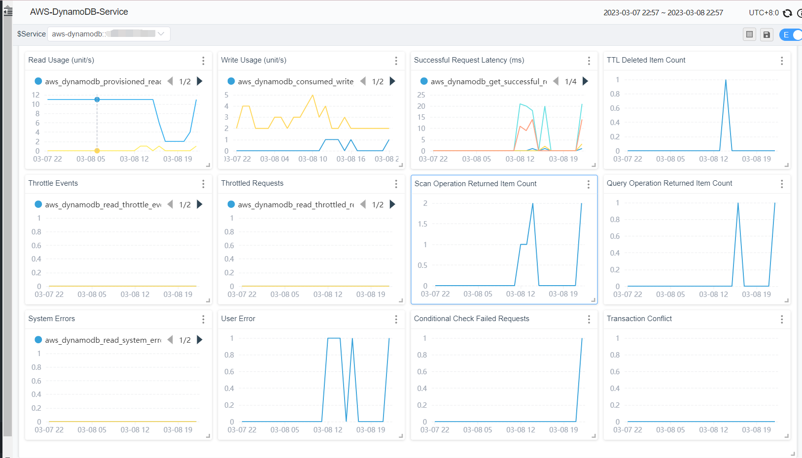

使用SkyWalking监控DynamoDB

背景
Apache SkyWalking 是一个开源应用性能管理系统，帮助用户收集和聚合日志、追踪、指标和事件，并在 UI 上显示。从 OAP 9.4.0 开始，SkyWalking 新增了 AWS Firehose receiver，用来接收，计算CloudWatch metrics的数据。本文将以DynamoDB为例，展示如何使用 SkyWalking接收并计算 CloudWatch metrics 数据，以监控Amazon Web Services。
什么是 Amazon CloudWatch 与 Amazon Kinesis Data Firehose ？
Amazon CloudWatch 是一个指标存储库, 此工具可从 AWS中 ( 如 DynamoDB ) 收集原始数据，近实时处理为可读取的指标。同时，我们也可以使用指标流持续地将 CloudWatch 指标流式传输到所选的目标位置，实现近实时传送和低延迟。SkyWalking 利用此特性，创建指标流并将其导向 Amazon Kinesis Data Firehose 传输流，并由后者进一步传输处理。
Amazon Kinesis Data Firehose是一项提取、转换、加载服务，可以将流式处理数据以可靠方式捕获、转换和提供到数据湖、数据存储和分析服务中。SkyWalking利用此特性，将指标流最终导向 aws-firehose-receiver，交由OAP计算并最终展示指标。
整体过程流程图如下：

注意
- 由于 Kinesis Data Firehose 规定，HTTP端点的URL必须使用HTTPS协议，且必须使用443端口。同时，此URL必须由Gateway代理并转发到真正的aws-firehose-receiver。
- TLS 证书必须由CA签发的，自签证书不会被 Kinesis Data Firehose 信任。
设置DynamoDB监控
接下来以DynamoDB为例说明使用OAP 收集CloudWatch metrics 前，aws中必要的设置:
- 进入 Kinesis 控制台，创建数据流，
Source选择Direct PUT,Destination选择HTTP Endpoint. 并且设置HTTP Endpoint URL为Gateway对应URL。 其余配置选项可由需要自行配置。

- 进入 CloudWatch 控制台，在左侧控制面板中选择
Metrics-Stream，点击Create metric stream。其中，namespace选择AWS/DynamoDB。同时，根据需要，也可以增加其他命名空间。Kinesis Data Firehose选择在第一步中创建好的数据流。最后，设置输出格式为opentelemetry0.7。其余配置选项可由需要自行配置。

至此，DynamoDB监控配置的AWS方面设置完成。
SkyWalking OAP 指标处理分析
SkyWalking 利用 aws-firehose-receiver 接收并解码由Gateway转发来的 AWS 指标流，交由Opentelemetry-receiver进行处理，转化为SkyWalking metrics。并由Meter Analysis Language (MAL)进行指标的分析与聚合，最终呈现在UI上。
其中 MAL 部分以及 UI 部分，SkyWalking支持用户自由定制，从而更多样性的展示指标数据。详情请参考MAL doc 以及 UI doc。

典型指标分析
作用域
SkyWalking中，有作用域 ( scope ) 的概念。通过作用域, 我们可以对指标进行更合理的分类与聚合。在对DynamoDB的监控中，使用到了其中两种作用域———Service和Endpoint。
Service表示一组工作负荷，这些工作负荷为传入请求提供相同的行为。常用作服务的集群级别作用域，在AWS中，用户的账户更接近集群的概念。 所以SkyWalking将AWS account id作为key，将AWS账户映射为Service类型。
同理，Endpoint表示一种逻辑概念，常用于服务中用于传入请求的路径，例如 HTTP URI 路径或 gRPC 服务类 + 方法签名，也可以表示数据库中的表结构。所以SkyWalking将DynamoDB表映射为Endpoint类型。
指标
| 指标名称 | 含义 |
|---|---|
| AccountMaxReads / AccountMaxWrites | 账户可以使用的最大 读取/写入 容量单位数。 |
| AccountMaxTableLevelReads / AccountMaxTableLevelWrites | 账户的表或全局二级索引可以使用的最大 读取/写入 容量单位数。 |
| AccountProvisionedReadCapacityUtilization / AccountProvisionedWriteCapacityUtilization | 账户使用的预置 读取/写入 容量单位百分比。 |
| MaxProvisionedTableReadCapacityUtilization / MaxProvisionedTableWriteCapacityUtilization | 账户的最高预调配 读取/写入 表或全局二级索引使用的预调配读取容量单位百分比。 |
以上为一些常用的账户指标(Serivce 作用域)。它们是DynamoDB中的各种配置信息，SkyWalking通过对这些指标的监控，可以完整的展示出数据库配置的变动情况。
| 指标名称 | 含义 |
|---|---|
| ConsumedReadCapacityUnits / ConsumedWriteCapacityUnits | 指定时间段内占用的 读取/写入 容量单位数 |
| ReturnedItemCount | Query、Scan 或 ExecuteStatement（可选择）操作在指定时段内返回的项目数。 |
| SuccessfulRequestLatency | 指定时间段内对于 DynamoDB 或 Amazon DynamoDB Streams 的成功请求的延迟。 |
| TimeToLiveDeletedItemCount | 指定时间段内按存活时间 (TTL) 删除的项目数。 |
以上为一些常用的表指标(Endpoint作用域)，它们也会被聚合到账户指标中。这些指标一般用于分析数据库的性能，用户可以通过它们判断出数据库配置的合理程度。例如，用户可以通过ConsumedReadCapicityUnits / ConsumedReadCapicityUnits，跟踪预置吞吐量的使用，从而判断表或账户的预制吞吐量的合理性。关于预置吞吐量，请参见读/写容量模式。
| 指标名称 | 含义 |
|---|---|
| UserErrors | 在指定时间段内生成 HTTP 400 状态代码的对 DynamoDB 或 Amazon DynamoDB Streams 的请求。HTTP 400 通常表示客户端错误，如参数组合无效，尝试更新不存在的表或请求签名错误。 |
| SystemErrors | 在指定的时间段内生成 HTTP 500 状态代码的对 DynamoDB 或 Amazon DynamoDB Streams 的请求。HTTP 500 通常指示内部服务错误。 |
| ThrottledRequests | 超出资源（如表或索引）预置吞吐量限制的 DynamoDB 请求。 |
| TransactionConflict | 由于同一项目的并发请求之间的事务性冲突而被拒绝的项目级请求。 |
以上为一些常用的错误指标，其中UserErrors为用户级别指标，其余为表级别指标。用户可以在这些指标上设置告警，如果警告出现，那么可能说明数据库的使用出现了一些问题，需要用户自行查看验证。
注意
SkyWalking对于DynamoDB的指标选取直接来源于CloudWatch metrics， 您也可以通过CloudWatch metrics doc来获取指标详细信息。
Demo
在本节中，我们将演示如何利用terraform创建一个DynamoDB表，以及可以产生指标流的其他AWS服务，并部署Skywalking完成指标收集。
首先，您需要一个正在运行的网关实例，例如 NGINX，它负责接收AWS传来的指标流并且转发到aws-firehose-receiver。注意, 网关需要配置证书以便接受HTTPS协议的请求。
下面是一个NGINX的示例配置。配置不要求完全一致，只要能将收到的HTTPS请求发送到oap所在host:12801/aws/firehose/metrics即可。
server {
listen 443 ssl;
ssl_certificate /crt/test.pem;
ssl_certificate_key /crt/test.key;
ssl_session_timeout 5m;
ssl_ciphers ECDHE-RSA-AES128-GCM-SHA256:ECDHE:ECDH:AES:HIGH:!NULL:!aNULL:!MD5:!ADH:!RC4;
ssl_protocols TLSv1 TLSv1.1 TLSv1.2;
ssl_prefer_server_ciphers on;
location /aws/firehose/metrics {
proxy_pass http://test.xyz:12801/aws/firehose/metrics;
}
}
部署SkyWalking
SkyWalking的部署方式有很多种，您可以直接从release页面中直接获取。
当然，如果您更习惯于 Kubernetes，您也可以从SkyWalking-kubernetes找到相应部署方式。
请注意，无论使用哪种部署方式，请确保OAP和UI的版本为9.4.0以上，并且需要开放12801端口。
下面是一个使用helm指令部署的示例：
export SKYWALKING_RELEASE_VERSION=4.3.0
export SKYWALKING_RELEASE_NAME=skywalking
export SKYWALKING_RELEASE_NAMESPACE=default
helm install "${SKYWALKING_RELEASE_NAME}" \
oci://registry-1.docker.io/apache/skywalking-helm \
--version "${SKYWALKING_RELEASE_VERSION}" \
-n "${SKYWALKING_RELEASE_NAMESPACE}" \
--set oap.image.tag=9.4.0 \
--set oap.storageType=elasticsearch \
--set ui.image.tag=9.4.0 \
--set oap.ports.firehose=12801
开启对应AWS服务
terraform 配置文件如下（实例修改于Terraform Registry - kinesis_firehose_delivery_stream）：
terraform 配置文件
provider "aws" {
region = "ap-northeast-1"
access_key = "在这里填入您的access_key"
secret_key = "在这里填入您的secret_key"
}
resource "aws_dynamodb_table" "basic-dynamodb-table" {
name = "GameScores"
billing_mode = "PROVISIONED"
read_capacity = 20
write_capacity = 20
hash_key = "UserId"
range_key = "GameTitle"
attribute {
name = "UserId"
type = "S"
}
attribute {
name = "GameTitle"
type = "S"
}
attribute {
name = "TopScore"
type = "N"
}
ttl {
attribute_name = "TimeToExist"
enabled = true
}
global_secondary_index {
name = "GameTitleIndex"
hash_key = "GameTitle"
range_key = "TopScore"
write_capacity = 10
read_capacity = 10
projection_type = "INCLUDE"
non_key_attributes = ["UserId"]
}
tags = {
Name = "dynamodb-table-1"
Environment = "production"
}
}
resource "aws_cloudwatch_metric_stream" "main" {
name = "my-metric-stream"
role_arn = aws_iam_role.metric_stream_to_firehose.arn
firehose_arn = aws_kinesis_firehose_delivery_stream.http_stream.arn
output_format = "opentelemetry0.7"
include_filter {
namespace = "AWS/DynamoDB"
}
}
# https://docs.aws.amazon.com/AmazonCloudWatch/latest/monitoring/CloudWatch-metric-streams-trustpolicy.html
data "aws_iam_policy_document" "streams_assume_role" {
statement {
effect = "Allow"
principals {
type = "Service"
identifiers = ["streams.metrics.cloudwatch.amazonaws.com"]
}
actions = ["sts:AssumeRole"]
}
}
resource "aws_iam_role" "metric_stream_to_firehose" {
name = "metric_stream_to_firehose_role"
assume_role_policy = data.aws_iam_policy_document.streams_assume_role.json
}
# https://docs.aws.amazon.com/AmazonCloudWatch/latest/monitoring/CloudWatch-metric-streams-trustpolicy.html
data "aws_iam_policy_document" "metric_stream_to_firehose" {
statement {
effect = "Allow"
actions = [
"firehose:PutRecord",
"firehose:PutRecordBatch",
]
resources = [aws_kinesis_firehose_delivery_stream.http_stream.arn]
}
}
resource "aws_iam_role_policy" "metric_stream_to_firehose" {
name = "default"
role = aws_iam_role.metric_stream_to_firehose.id
policy = data.aws_iam_policy_document.metric_stream_to_firehose.json
}
resource "aws_s3_bucket" "bucket" {
bucket = "metric-stream-test-bucket"
}
resource "aws_s3_bucket_acl" "bucket_acl" {
bucket = aws_s3_bucket.bucket.id
acl = "private"
}
data "aws_iam_policy_document" "firehose_assume_role" {
statement {
effect = "Allow"
principals {
type = "Service"
identifiers = ["firehose.amazonaws.com"]
}
actions = ["sts:AssumeRole"]
}
}
resource "aws_iam_role" "firehose_to_s3" {
assume_role_policy = data.aws_iam_policy_document.firehose_assume_role.json
}
data "aws_iam_policy_document" "firehose_to_s3" {
statement {
effect = "Allow"
actions = [
"s3:AbortMultipartUpload",
"s3:GetBucketLocation",
"s3:GetObject",
"s3:ListBucket",
"s3:ListBucketMultipartUploads",
"s3:PutObject",
]
resources = [
aws_s3_bucket.bucket.arn,
"${aws_s3_bucket.bucket.arn}/*",
]
}
}
resource "aws_iam_role_policy" "firehose_to_s3" {
name = "default"
role = aws_iam_role.firehose_to_s3.id
policy = data.aws_iam_policy_document.firehose_to_s3.json
}
resource "aws_kinesis_firehose_delivery_stream" "http_stream" {
name = "metric-stream-test-stream"
destination = "http_endpoint"
http_endpoint_configuration {
name = "test_http_endpoint"
url = "这里填入Gateway的url"
role_arn = aws_iam_role.firehose_to_s3.arn
}
s3_configuration {
role_arn = aws_iam_role.firehose_to_s3.arn
bucket_arn = aws_s3_bucket.bucket.arn
}
}
使用步骤：
1.获取AWS账户的access_key以及secret_key。( 关于如何获取，请参考：create-access-key )
2.将上一步中获取的access_key与secret_key填入对应位置，并将您的网关对应 url 填入 aws_kinesis_firehose_delivery_stream 配置的对应位置中。
3.复制以上内容并保存到main.tf文件中。
4.在对应路径下执行以下代码。
terraform init
terraform apply
至此，需要的AWS服务已全部建立成功，您可以检查您的控制台，查看服务是否成功创建。
完成！
如果以上步骤全部成功，请耐心等待约五分钟。之后您可以访问SkyWalking UI，查看指标变动情况
目前，SkyWalking 默认收集的指标展示如下：
账户指标:

表指标：

现已支持的服务
目前SkyWalking官方支持EKS，S3，DynamoDB监控。 用户也参考 OpenTelemetry receiver 配置OTEL rules来收集，计算AWS其他服务的CloudWatch metrics，并且通过自定义dashboard展示。